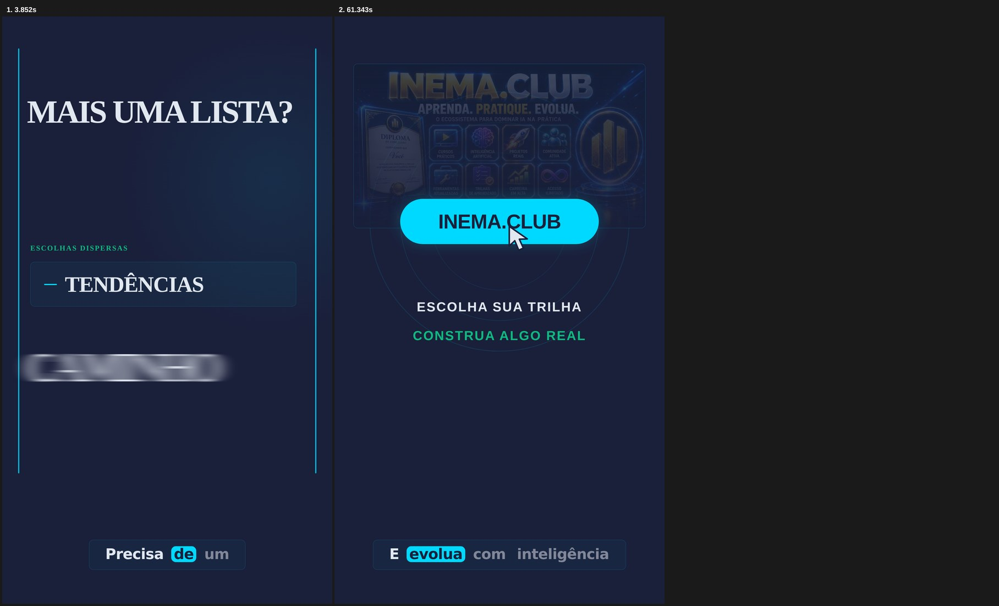

Del contenido al MP4Entra un enlace.
Entra un enlace.
Sale un video.
Convierte páginas y artículos en videos verticales editables, narrados en portugués y listos para revisión antes del render.

Convierte páginas y artículos en videos verticales editables, narrados en portugués y listos para revisión antes del render.
La IA investiga la fuente y prepara la producción. Tú mantienes el control editorial, abres cada composición y decides cuándo generar el archivo final.
Pega una URL en la interfaz o pásala por el terminal. El sistema crea un proyecto local en output/content2video/.
El guion, el storyboard, la voz, los subtítulos, las escenas, los medios y los tiempos siguen accesibles en HyperFrames Studio.
El MP4 solo se genera después de la validación, con un botón en la interfaz o un comando en el terminal.
La configuración predeterminada conserva la misma voz pt-BR incluso cuando la fuente original está en otro idioma.
Usa el OAuth de la suscripción mediante Codex CLI, que es la opción predeterminada, o configura una clave de API solo en .env.
Ejecuta la interfaz y el CLI.
node --version
Reutiliza el inicio de sesión OAuth local.
codex login codex login status
Codifica e inspecciona el video final.
ffmpeg -version
En ambos modos, los valores predeterminados vienen de .env: 60 segundos, tolerancia del 30%, nota 8, voz Francisca y video 9:16.
Clona el proyecto y crea tu configuración local.
git clone https://github.com/inematds/content2video.git
cd content2video
cp .env.example .env
npm installAjusta las IP de .env si es necesario y abre la dirección que se muestra.
npm start # predeterminado: http://192.168.2.99:3080
El slug opcional define el nombre de la carpeta del video.
npm run video:create -- https://www.inema.club/ inema-club-promoAbre el editor o ejecuta la verificación automática.
npm run video:preview -- inema-club-promo
npm run video:check -- inema-club-promoEl archivo final va a output/content2video/<slug>/renders/<slug>.mp4.
npm run video:render -- inema-club-promoLa producción local reúne un institucional de INEMA.club, un artículo en inglés narrado en pt-BR y el MVP original.


La base operativa está lista para probar en una red local.